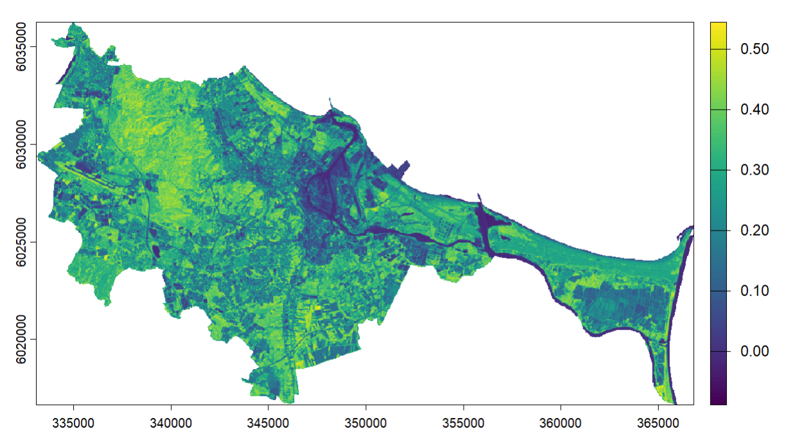
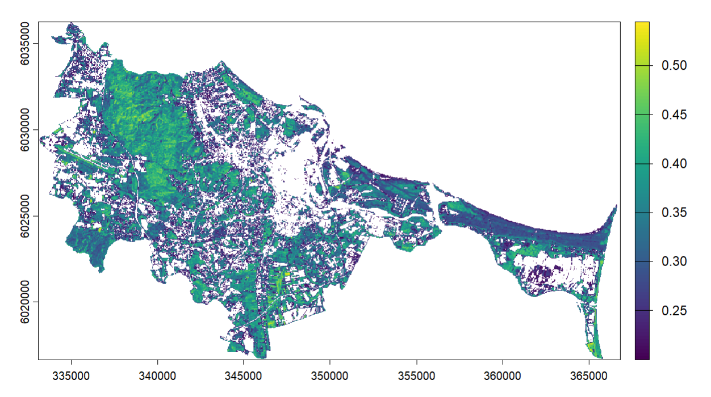
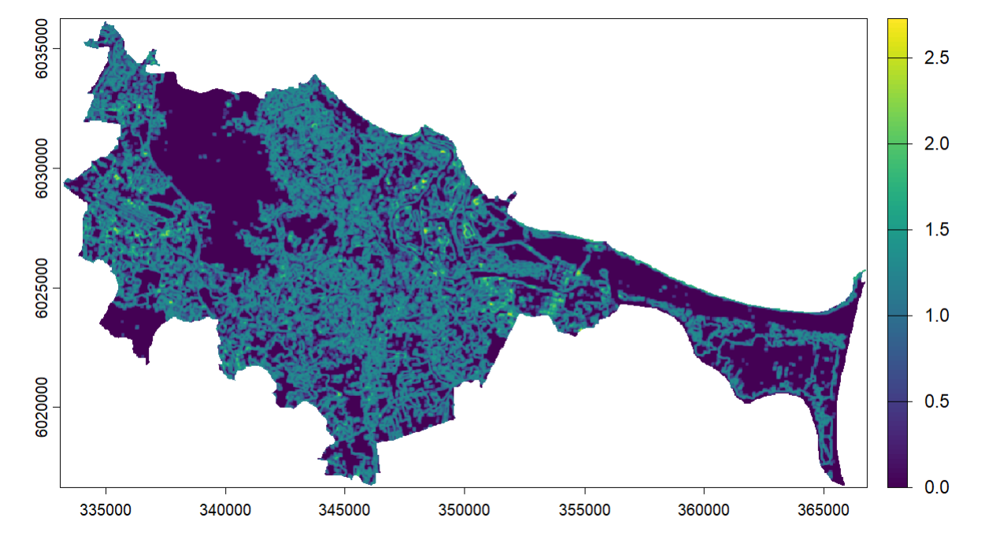
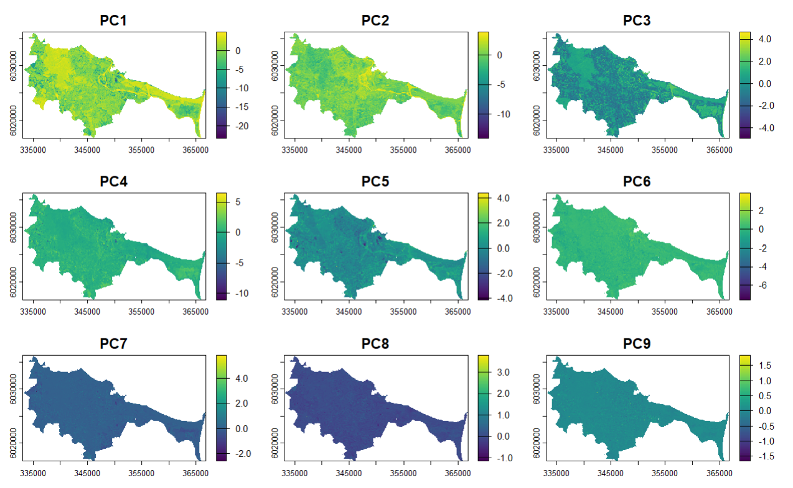

4 Week 3: Corrections
4.1 Summary
In Week 3 we covered the corrections that are often necessary to make remotely sensed data usable for analysis.
Although most remotely sensed data nowadays comes ‘analysis ready’ it was interesting and useful to understand these concepts in more detail.
In this chapter I’ll summarise:
- Radiative transfer and atmospheric correction
- Geometric distortions and corrections
- Orthorectification/topographic correction
- Radiometric calibration
Before moving onto the applications where I look at NVDI and Texture analysis in Gdansk and my reflections.
4.1.1 Radiative transfer and atmospheric correction
Going back to concepts from Week 1 radiative transfer was helpful to recap in the context of understanding why atmospheric correction is needed for remotely sensed data.
I enjoyed the video from Karen Joyce explaining this concept in an accessible way using the example of emitted sunlight (Top of Atmosphere irradiance) which is reflected off of a surface and into a sensor (also referred to as At Sensor Radiance). However, some light from the sun will end up being scattered in the atmosphere (diffuse irradiance) and will also get recorded by the sensor.
Whereas, ground scanners measure total radiance i.e. all light reflected off the sun, sensors in the atmosphere or in space will measure At Sensor Radiance. To get an accurate image of the ground the atmospheric component (additive path radiance) needs to be subtracted from the At Sensor Radiance i.e. the sensor produced image.

There are several ways to correct for this haze-like effect, this is especially necessary when we want to extract accurate information about the biophysical nature of the image e.g. plant health or temperature as these will get distorted by the light interactions with particles in the atmosphere. The list below is not an exhaustive list of methods but a flavour of what’s available and how it works.
| Correction | Method | Pros & Cons |
|---|---|---|
| Dark Object Substraction | Find the darkest value from the image collected and subtract this value from each pixel. Works on the principle that some dark objects e.g. water bodies will have near zero reflectance, and these values can then be subtracted from all the pixels in the image to remove atmospheric haze. | Pros: relative normalisation to a reference image often not expensive Cons: there may not be a dark object within an image to normalise to |
| Pseudo Invariant Features | Takes features which do not change in an image e.g. a road or carpark, this will have a temporally stable spectral reflectance and can be used to normalise the imagery using linear regression to remove the atmospheric effects. | Pros: inexpensive if a reference image has a PIF Cons: if there is no PIF feature it can be unreliable, assumes reference image atmospheric distortion will be similar across time |
| FLAASH (Fast line of sight atmospheric analysis) | Removes atmospheric effects by modelling the atmosphere using a technique called MODTRAN which simulates the atmospheric path and enables the estimation of light scattering between the ground and sensor. It requires more detailed information about the sensor and is a more expensive tool to use, however the calculations based on physics enable precise correction. |
Pros: an absolute atmospheric correction is usually more precise Cons: requires more detailed atmospheric data and often expensive models to model atmospheric condition at the time of the image taken |
4.1.2 Geometric distortion and corrections:
Apart from light there are other ways in which the way the sensor collects an image can result in some need for correction, these are geometric distortions such as:
View angle - whether the sensor collects data straight down or at a Nadir or at an angle
Topography - hills vs flatlands
Rotation of the earth - from satellite data, depending on the path of flight of the satellite
Or things like wind if data is collected from a plane
The most common way to correct for geometric distortions is by having Ground Control Points (GCPs) to match existing features from a reference picture. Examples of this are:
Local maps
GPS data from another device
Or another satellite image
Here we look for points that wouldn’t have changed, potentially natural features like rivers although these can change so sometimes man-made features can work better.
4.1.3 Orthorectification /topographic correction
Georectification refers to adding coordinates to an image and orthorectification refers to removing the distortions to make an image at a nadir angle i.e. straight down.
This is a subset of geometric correction.
In order to make an orthorectified image the elevation needs to be known, as well as GCPs which then allow a correction algorithm to transform the raw data into an orthorectified image. There are various algorithms to do this often depending on the sensor, image resolution and the desired level of accuracy.
4.1.4 Radiometric calibration
This is the process of converting the image brightness captured as Digital Numbers by sensors into spectral radiance.
Digital Numbers refer to the brightness captured in a remotely sensed image, but they have no units.
Spectral radiance is the amount of light within a band from a sensor, measured in Watts, per metre squared, per steradian (angle of view), per nanometre (wavelenght).
This is necessary when collecting images across time, which will be influenced by atmospheric and geometric distortions so to compare these more accurately we need to calibrate the pixel values using information about the sensor (e.g. how it was calibrated).
4.2 Applications
4.2.1 Image enhancements: NVDI
Using a technique called ratioing I was able to calculate the Normalised Difference Vegetation Index (NDVI) which works by comparing near-infrared bands to red light wavelengths to reflect healthy and less healthy vegetation.

I was able to calculate NDVI by using Landsat 8 images for Gdansk using the following formula and subtracting the near-infrared band (Band 5) from red light wavelength (Band 4), and then dividing by the sum of both.

The image above reflects vegetation in August 2025, where we can see dense vegetation across the forest area of Lasy Oliwskie. Nevertheless it is actually more difficult to assess the health of vegetation without more comparison over time as the lower NDVI figures reflect water and built up areas of sparse vegetation, hence for future analysis it might make more sense to subset this area and compare the NDVI for more dense vegetation areas across time to look at plant health. As this imagery is from August 2025 there may be areas where plant health is worse due to heat which last year was between 25-31 degrees Celsius.
4.2.2 Filtering
I was also able to filter the image to show everything above NDVI 0.2, this can be used to mask out vegetation from built up areas which can be useful for further monitoring.

As mentioned above there are some caveats with the NDVI index that I wanted to understand more, especially when filtering NDVI and making sense of what increasing by 0.1 meant and whether it was useful for reflecting the health of vegetation.
I found reading Iglesia Martinez and Labib (2023) helped to this into context, as they focus on Greater Manchester to identify how NDVI values can be “sensitive to certain vegetation types and quantities at different spatial scales”. This means that an change between NDVI 0.2 to 0.3 may be associated with a greater increase in greenspace % compared to an increase from 0.5 to 0.6 and thus may tell us where greening policies can have the highest impact for communities.
However, this also varies depending on the area we’re looking at so their results aren’t necessarily replicable in different cities, so working with NDVI may require first understanding how vegetation types like trees, shurbs and grass affect the index.
4.2.3 Texture analysis
Next I wanted to look at potentially extracting more of the built up areas of the city using the Gray Level Co-occurence Matrix GLCMTextures package to calculate the more ‘jagged’ texture of man-made materials like concrete by comparing variance to the adjacent pixels.
I played around with the settings and looked at the GLCM_entropy metric to look at low entropy areas such as calm water or smooth surfaces and higher entropy for areas like urban settings.

I think another way to improve on this would be to select a smaller neighbourhood to look at textures within the city centre urban area and see if we can identify differences between dense built up areas or industrial areas vs residential areas.
4.2.4 Data fusion - PCA
Data fusion was something I was really interested in after reading Schulte to Bühne and Pettorelli (2018) and here it is applied in a slightly simpler sense, by taking the texture produced above as a new Band effectively appending it to our original raster dataset. Using this we can better see the differences between built up and vegetation across Gdansk, although as mentioned in the lecture this where remote sensing becomes more of an art, as there is a lot of room to transform the data in many different ways.
Following on from Week 1, PCA is used to reduce the dimensionality of remotely sensed data, in this week’s practical I combined the texture data with the spectral reflectance Landsat 8 data for Gdansk.
This was done to reduce the number of variables in my data helping to enhance my image whilst keeping the key patterns of the dataset e.g. my vegetation vs urban areas divide.

In the image above PCA1 captures most of the variance between the vegetation and more built up areas and can be used by a machine learning algorithm to predict trends and patterns visible in the data.
4.3 Reflections
I think the analysis I was able to produce could be better to show more distinction between the built-up areas and vegetation but for a first go with texture and raster PCA I am glad it generally worked.
Working with texture analysis was useful for separating some of the natural environment from built environment, and I think in the future working with a smaller area could be really useful for my work, for example mapping neighbourhood level green spaces, or underutilised sites and see where in the brough there are opportunities for redevelopment.
As I was looking at various research which used satellite imagery around the Gdansk area I found an article (Tysiac, Dąbal, and Widerski 2026) which used multispectral imagery and LiDAR technology for heritage mapping purposes. As an ex-history graduate this grabbed my interest and I found that high resolution imagery (1m), historical maps and machine learning classification to perform analysis in Google Earth Engine to attempt to digitally locate the remnants of a fortification from the 17th century called Gdanska Glowa.